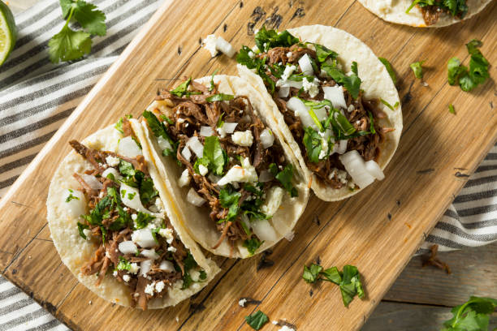

Tacos

Description
This food is a traditonal Mexican street food dish.
Items
- Carne Asada
- Tortillas
- Cilantro
- Cebolla
- Salsa
Steps
- Grill up your carne asada till about well done.
- Chop up cilantro and cebolla.
- Once those two are finished, start to warm up tortillas.
- Place meat and veggies on tortillas.
- Add salsa of your choice on top.
- Enjoy!